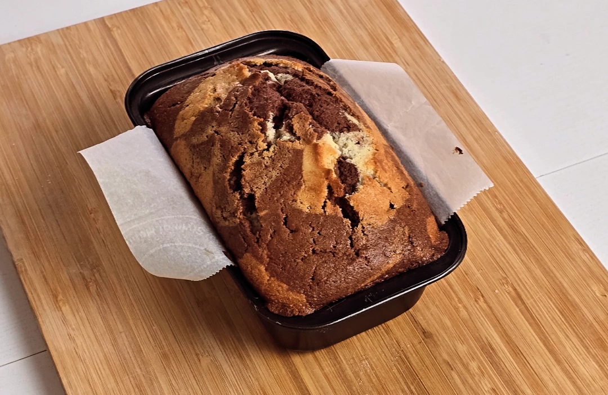

Chocolate Cheesecake

Ingredients
- 150g butter
- 1/2 cup sugar
- 3 eggs
- 1 cup all-purpose flour
- 1/2 tsp salt
- 1 tsp baking powder
- 4 tbsp milk
- 1 tsp vanilla
- 2 tsp cocoa powder
- 2tsp warm water
Steps
- Whip the butter and sugar together till its fluffy.
- Add the eggs and mix it one by one.
- Add the sifted flour, baking powder and salt in two batches and combine.
- Add the milk and combine.
- Add the vanilla and combine.
- In a separate bowl, add the cocoa powder with warm water and combine till it's smooth.
- Take half of the batter and combine it thoroughly with the cocoa mixture.
- Add the two mixture to the greased pan in alternative batches.
- Mix the batter a little with a spatula or a toothpick to get a swirly design.
- Bake in a preheated oven at 170°C for 50-55 minutes.
- Cool for 3-4 hours before slicing.
Go Back